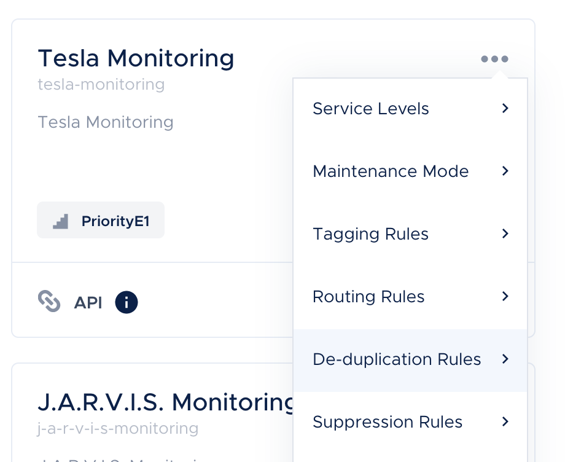
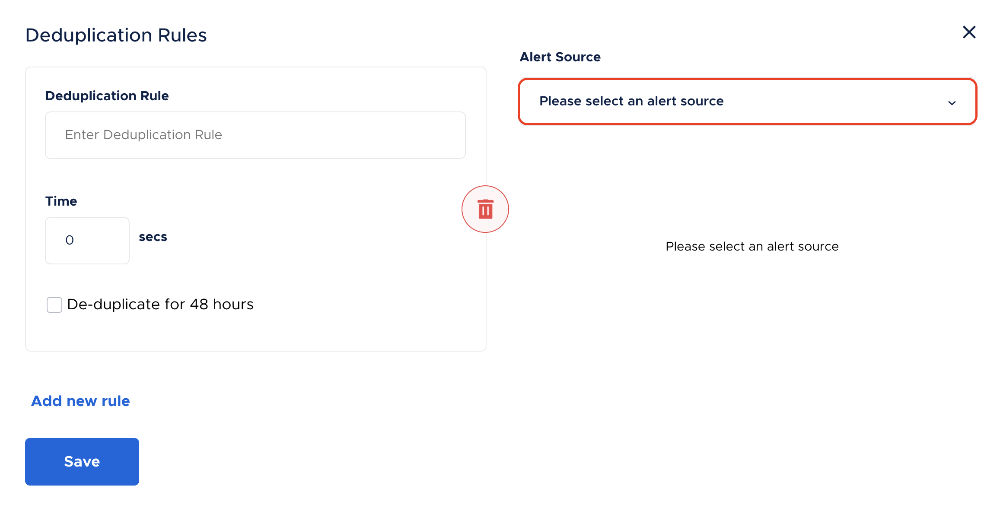
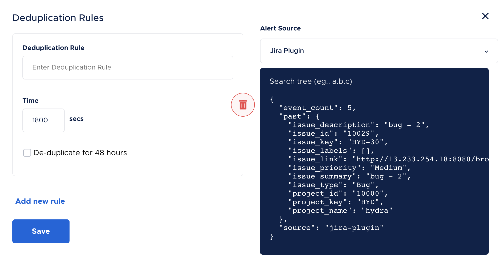
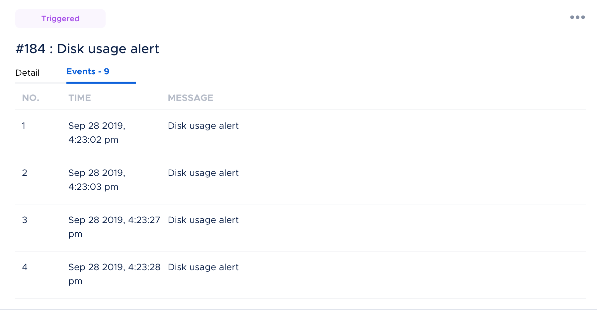

De-duplication Rules
Alert de-duplication can help you reduce alert noise by organising and grouping relevant alerts. This also provides easy access to similar alerts when needed.
For each service, you can define your rule for de-duplication.
You can set this up by going to app.squadcast.com.
- Go to the relevant service
- Click on the options dropdown
- Choose De-duplication rules

- Choose Alert Source from the Dropdown

You can add your de-duplication rule expression in the field “Deduplication rule”, select a time window for which the rule holds true. You could also choose to select the option of the maximum time window allowable, which is 48 hours.
During the time window set, incidents that occur are compared against all incidents that come in during that time period and will then get deduplicated against the first incident that it matches with.
The rules will be checked against all the incidents based on the time window set in place.
You can add as many rules by selecting the “Add rule” button below. The deduplication will be true for the first rule that matches in the list of rules added by you.

The count of events deduplicated against an incident will be shown in the incident dashboard and the incident details page.

Syntax for Writing Rules
The rule engine supports expressions with parameters, arithmetic, logical, and string operations. You can also check out this link to get an idea of all the expression types accepted in Squadcast.
- Basic expression:
10 > 0,1+2,100/3 - Parameterized expression:
past.metric == current.metricThe available parameters arepast,current,event_countpast: This parameter contains the JSON payload of the previous incident which the current event is compared with.current: This parameter contains the JSON payload of the incoming event which will be compared with the past incidents’ JSON payload.event_count: This denotes the number of deduplicated events for a given incident
- Regular expression:
re(past.metric, "disk.*")This can be used to check if a particular JSON payload field matches a regular expression. - Parsing JSON content:
jsonPath(payload.message, "a.b.c")This can be used to parse JSON formatted strings and get thejsonPathfrom the resulting JSON object
This can be used in scenarios where you don't want to deduplicate more than n number of events to a particular incident.
Examples
We can see alert payloads of past events from different alert sources for the service by selecting the respective alert source from the dropdown in the right-half side.
With Multiple Alert Sources, user now can perform de-duplication across different alert sources for a service. For example, if there is already an event that was triggered by alert source sentry and after sometime, there is another alert coming from jira-plugin indicating about the same alert, then you can dedupe them by using a rule which will look something like: (past.source == 'sentry' && current.source == 'jira-plugin') && <your_de-duplication_rule>
For a sample content shown in the right panel of the configuration space
{
"event_count": 5,
"past": {
"issue_description": "bug - 2",
"issue_id": "10029",
"issue_key": "HYD-30",
"issue_labels": [],
"issue_link": "http://13.233.254.18:8080/browse/HYD/issues/HYD-30",
"issue_priority": "Medium",
"issue_summary": "bug - 2",
"issue_type": "Bug",
"project_id": "10000",
"project_key": "HYD",
"project_name": "hydra"
},
"source": "jira-plugin"
}
Use Case
For any incoming alert, if
- The
metricmatches the regular expression^disk.* - The
pastincidentmetricand thecurrenteventmetricare the same - The
pastincidenthostand thecurrenteventhostare the same - The
currentdisk usagevalueis less than 60% - The
contextvalue tag is same
Rule
(past.metric == current.metric) && re(current.metric, "^disk.*") && (past.host == current.host) && (current.value < 60) && jsonPath(past.tags, "context.value") == jsonPath(current.tags, "context.value")